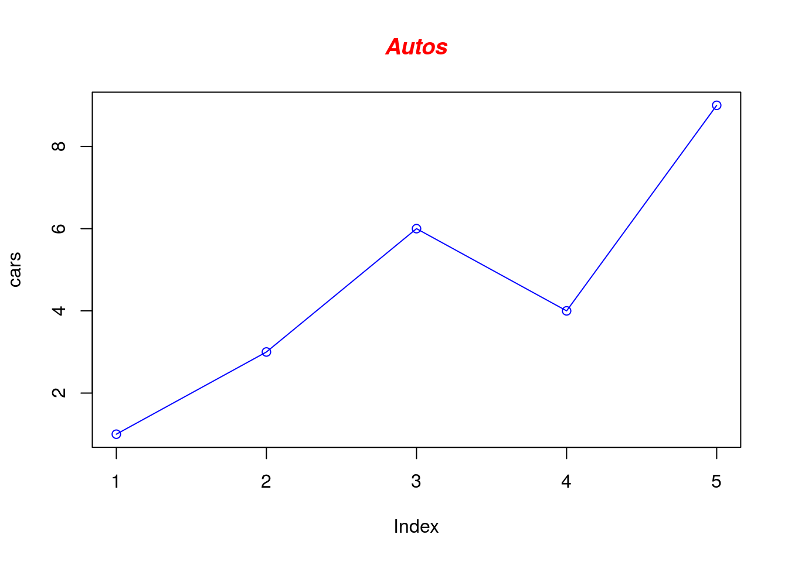

Preface

## Bioconductor version 3.7 (BiocInstaller 1.30.0), ?biocLite for help## A newer version of Bioconductor is available for this version of R,
## ?BiocUpgrade for help## BioC_mirror: https://bioconductor.org## Using Bioconductor 3.7 (BiocInstaller 1.30.0), R 3.5.2 (2018-12-20).(PART) Linux
1 Why Linux?
1.1 What is Linux
Before the creation of Linux, Unix was developed by AT&T Bell Labs in the 1960’s. It’s an operating system. Before the creation of Linux, and before the rise of Windows, the computing world was dominated by Unix (from web). After many years of evolution, Linux was created in early 1990’s.
In case you don’t know, Mac OS X is also a certified Unix operating system. So most of the Linux skills are applied in Mac OS X.
Linux is a clone of the operating system Unix, written from scratch by Linus Torvalds (Figure @ref(fig:LinuxTerminal)) with assistance from a loosely-knit team of hackers across the Net. It aims towards POSIX and Single UNIX Specification compliance (Torvalds (2015)).
(ref:LinuxTerminal) An example of Linux terminal.

(#fig:LinuxTerminal)(ref:LinuxTerminal)
It has all the features you would expect in a modern fully-fledged Unix, including true multitasking, virtual memory, shared libraries, demand loading, shared copy-on-write executables, proper memory management, and multistack networking including IPv4 and IPv6. It is distributed under the GNU General Public (Torvalds, 2015).
Maybe it’s hard to understand what Linux or to remember the sentences mentioned above. Just know Linux is an operating system like Windows. This is enough for you to start out.

(#fig:LinusTorvaldsGitHub)Linus Torvalds on GitHub
1.2 Linux for bioinformatics
For analysis of NGS data, a large amount of software were developed for using under Linux environment. Among them, a large proportion can be only used under Linux environment.
- Easy to build simple pipelines (awk, bash, piping, bash redirection, texttools)
- Simple to install and use software development tools
- Multiple versions of a program can be installed by the user himself and switched on/off with sourcing some scripts without being administrator
- A lot of good scientific software is written in a non portable way for linux/unix (almost all short read aligners, samtools). This makes it necessary to use Unix for genomics.
- Ability to perform analyses on computer clusters (important for big/long computational jobs)
2 Connecting to Linux
2.1 User interfaces
As an operating systemsm, Linux comes with two types of user interfaces: Graphical User Interface (GUI) and command line interface (shell).
GUI means there will be window, buttons, menus, etc. The most popular system with GUI is Windows system (Figure @ref(fig:windowsGUI)).
(ref:windowsGUI) Windows GUI.

(#fig:windowsGUI)(ref:windowsGUI)
Command line interfaces means that you need to type the command line yourself. Usually the results will be displayed as text (Figure @ref(fig:linuxTerminalExam2)).
(ref:linuxTerminalExam2) An example of Linux terminal.

(#fig:linuxTerminalExam2)(ref:linuxTerminalExam2)
In Bioinformatics analysis, usually you won’t operate directly on the physical machine of the Linux server. Usually you need to connect to the Linux server via a tool, like Putty, Mobaxterm, etc.
2.2 How to connect
If you want to connect to a Linux server, what you need to know first is:
IP address of your Linux server;
User name and password of your account;
If you are a Mac OS X user, you can connect to a Linux server by using Terminal, a console program included with the operating system.
For Windows users, I would recommend MobaXterm for remote connection. MobatXterm is an excellent toolbox for remote connection from Windows system. It comes with an X11 server and provides many networking tools and tabbed SSH. It has all the essential UNIX commands in a single portable executable file.
Here I show one example of what you should do When you first open Mobaxterm. You need to follow the numbers in Figure @ref(fig:mobaxtermInit): click Session; then click SSH; type the IP or name address of the remote host, check Specify username if you need; click OK.
(ref:mobaxtermInit) First open of Mobaxterm.

(#fig:mobaxtermInit)(ref:mobaxtermInit)
Then you need to type the password. It’s OK that you don’t see anything when you’re typing (Figure @ref(fig:mobaxtermSavepswd)). Then click Enter on the keyboard.For the first time of log-in, you’ll be asked to whether to save the password or not. If you say click Yes, you won’t need to type the password again next time.
(ref:mobaxtermSavepswd) Type password and save it in Mobaxterm.

(#fig:mobaxtermSavepswd)(ref:mobaxtermSavepswd)
If you can find a Linux server, it’ll be very good for you to practise. If you are a student or a researcher in a university or an institute, usually you can get an account from your department.
If NOT, here I provided a guest account for you. Here are the user name and password:
IP address: 198.211.107.37
User name: guest4bioinfo
Password: nobigfileAs you can tell from the password, please do NOT upload BIG files (bigger than 2 MB).
2.2.1 DigitalOcean droplet
Another option is to sign up on DigitalOcean and create a droplet. DigitalOcean calls its cloud servers Droplets; each Droplet you create is a new server for your personal use. DigitalOcean has a tutorial of [How To Create Your First DigitalOcean Droplet] (https://www.digitalocean.com/community/tutorials/how-to-create-your-first-digitalocean-droplet). You can get a your own Linux server with a $5 monthly payment.
The Linux server with IP address of 198.211.107.37 is a droplet on DigitalOcean. I pay $5 each month for this droplet.
2.2.2 AWS Free Tier offering
One more way to get access to a Linux system is to take advantage of Red Hat Enterprise Linux delivered by Amazon EC2 (Elastic Compute Cloud). Red Hat and Amazon Web Services collaborate to provide official Red Hat Enterprise Linux licensed images through Amazon’s on-demand public cloud service at free or low cost.
The guided exercises and labs for this course were written assuming that you will set up an account with Amazon Web Services and use it to start a single, simple system running Red Hat Enterprise Linux 7. You will connect to that system securely over the internet and use it to practice commands.
At the time of writing, Amazon Web Services provides an AWS Free Tier offering, which gives new users free access to certain sizes of cloud instances and operating environments (including Red Hat Enterprise Linux 7) for up to 750 hours per month, for 12 months.
3 File system and commands of Linux
3.1 Path
To understand Linux file system, you can image it as a tree structure (Figure @ref(fig:linuxTreeStruc)).
(ref:linuxTreeStruc) Tree structure of Linux system.

(#fig:linuxTreeStruc)(ref:linuxTreeStruc)
In Linux, a path is a unique location of a file or a directory in the file system.
For convenience, Linux file system is usually thought of in a tree structure. On a standard Linux system you will find the layout generally follows the scheme presented below.
The tree of the file system starts at the trunk or slash, indicated by a forward slash (/). This directory, containing all underlying directories and files, is also called the root directory or “the root” of the file system.
3.1.1 Relative and absolute path
- Absolute path
An absolute path is defined as the location of a file or directory from the root directory(/). An absolute path starts from the root of the tree (/).
Here are some examples:
/home/xie186
/home/xie186/perl5- Relative path
Relative path is a path related to the present working directory.
data/sample1/
../doc/If you want to get the absolute path based on relative path, you can use readlink with parameter -f:
## /cloud/project
## /cloud##Surfing in Linux file system
Once we enter into a Linux file system, we need to 1) know where we are; 2) how to get where we want; 3) how to know what files or directories we have in a particular path.
###Command pwd
In order to know where we are, we need to use pwd command. The command pwd is short for “print name of current/working directory”. It will return the full path of current directory.
Command pwd is almost always used by itself. This means you only need to type pwd and press ENTER (Figure @ref(fig:linuxCMDpwd)).
(ref:linuxCMDpwd) Linux command pwd

(#fig:linuxCMDpwd)ref:linuxCMDpwd
3.1.2 Comand ls
After you know where you are, then you want to know what you have in that
directory, we can use command ls to list directory contents (Figure @ref(fig:linuxCMDls)). Its syntax is:
ls [option]... [file]...(ref:linuxCMDls) Linux command ls

(#fig:linuxCMDls)ref:linuxCMDls
ls with no option will list files and directories in bare format. Bare format means the detailed information (type, size, modified date and time, permissions and links etc) won’t be viewed. When you use ls by itself (Figure @ref(fig:linuxCMDls)), it will list files and directories in the current directory.
## 10_PerlInputOutput_bak.Rmd
## linuxPathShortcuts.tsv
## textEditorLinuxVi3modes.csv
## ls -a
## .
## ..
## 10_PerlInputOutput_bak.Rmd
## linuxPathShortcuts.tsv
## textEditorLinuxVi3modes.csv
## ls -t
## 10_PerlInputOutput_bak.Rmd
## linuxPathShortcuts.tsv
## textEditorLinuxVi3modes.csv## total 24
## drwxrwxr-x 2 rstudio-user rstudio-user 4096 Apr 15 15:48 .
## drwxr-xr-x 16 rstudio-user rstudio-user 4096 Apr 15 16:33 ..
## -rw-rw-r-- 1 rstudio-user rstudio-user 4139 Apr 15 15:48 10_PerlInputOutput_bak.Rmd
## -rw-rw-r-- 1 rstudio-user rstudio-user 223 Apr 15 15:48 linuxPathShortcuts.tsv
## -rw-rw-r-- 1 rstudio-user rstudio-user 766 Apr 15 15:48 textEditorLinuxVi3modes.csvLinux command options can be combined without a space between them and with a single - (dash).
The following command is a faster way to use the l and a options and gives the same output as the Linux command shown above.
ls -la 3.1.3 Command cd
Command cd is used to change the current directory. It’s syntax is:
cd [option] [directory]Unlike pwd, when you use cd you usually need to provide the path (either absolute or relative path) which we want to enter.
If we didn’t provide any path information, we will change to home directory by default.
##Path shortcuts
In Linux, there are three commonly used path shortpaths (Table @ref(tab:linuxPathShortcuts)).
(ref:linuxPathShortcuts) Shortcuts of path.
| Path | Shortcuts | Description |
|---|---|---|
| Single dot | . | The current folder |
| Double dots | .. | The folder above the current folder |
| Tilde character | ~ | Home directory (normally the directory:/home/my_login_name) |
| Dash | - | Your last working directory |
Here are some examples:
## /home/rstudio-user
## R## 00_about_me_acknowledge.Rmd
## 01_WhyLinux.Rmd
## 02_Connect2Linux.Rmd
## 03_FileSystemLinux.Rmd
## 04_Linux_FilteringOutputandFindingThings.Rmd
## 05_AchivingAndCompressingFiles.Rmd
## 06_procManageLinux.Rmd
## 07_fileTransfer.Rmd
## 08_InstallationOfSoftwareInLinux.Rmd
## 09_TextEditorInLinux.Rmd
## 10_FirstPerlProgram.Rmd
## 11_PerlVariableOperator.Rmd
## 13_PerlControlStructure.Rmd
## 14_StringManipulationRegExp.Rmd
## 15_PerlInputOutput.Rmd
## 16_practicalPerlProgram.Rmd
## 17_PerlModules.Rmd
## 18_R_intro.Rmd
## 19_SimpleGraphR.Rmd
## 20_GraphGgplot2.Rmd
## 21_GenerateHeatmap.Rmd
## 22_FigureManuscript.Rmd
## 23_IntroNGS.Rmd
## 24_introRNA-seq.Rmd
## 25_introChIP-seq.Rmd
## 26_introBSseq.Rmd
## 27_ExpDesign.Rmd
## 28_CapstoneProjectRNA-seq.Rmd
## 30_CapstoneProjectBS-seq.Rmd
## 30_py_why_program.Rmd
## 31_Good_resource.Rmd
## 32_Reference.Rmd
## DESCRIPTION
## LICENSE
## README.md
## Rmd_list.txt
## TODO
## _bookdown.yml
## _bookdown_files
## _build.sh
## _deploy.sh
## _output.yml
## bak
## bioinfBookXIE186.Rmd
## bioinfBookXIE186.aux
## bioinfBookXIE186.log
## bioinfBookXIE186_files
## book.bib
## bookdown-demo.Rproj
## bookdown-demo.log
## capstone_CRISPR_screen.Rmd
## cmd_linux_admin.Rmd
## code_R
## code_perl
## data
## docs
## download
## figures
## images
## index.Rmd
## index.Rmd_bak
## index.log
## lib
## order_Rmd.sh
## order_Rmd.sh.README
## packages.bib
## preamble.tex
## preamble_bak.tex
## rpres.css
## slides
## style.css
## tables
## test.pl
## test.py
## toc.css/cloud/project
/cloud
/cloudEach directory has two entries in it at the start, with names . (a link to itself) and .. (a link to its parent directory). The exception, of course, is the root directory, where the .. directory also refers to the root directory.
Sometimes you go to a new directory and do something, then you remember that you need to go to the previous working direcotry. To get back instantly, use a dash.
echo "This is our current directory: "
pwd
echo "Let's go our home diretory: "
cd ~
echo "Check where we are: "
pwd
echo "Let's go to your previous working direcotry: "
cd -
echo "Check where we're now: "
pwd## This is our current directory:
## /cloud/project
## Let's go our home diretory:
## Check where we are:
## /home/rstudio-user
## Let's go to your previous working direcotry:
## /cloud/project
## Check where we're now:
## /cloud/project3.2 Manipulations of files and directories
In Linux, manipulations of files and directories are the most frequent work. In this section, you will learn how to copy, rename, remove, and create files and directories.
3.2.1 Command cp
In Linux, command cp can help you copy files and directories into a target directory.
3.2.2 Command mv
The command mv is short for move (or rename) files.
3.2.2.2 Move multiple files into a directory
3.2.2.3 Move a directory
3.2.2.4 Rename a file or a directory
3.2.3 Command mkdir
Command mkdir is short for make directory.
The syntax is shown as below:
mkdir [OPTION ...] DIRECTORY ...Multiple directories can be specified when calling mkdir.
3.2.3.1 How to create a directory
mkdir -p foo/bar/bazHow to defining complex directory trees with one command
mkdir -p project/{software,results,doc/{html,info,pdf},scripts}This will create a direcotry trees as shown below:
$ tree project/
project/
├── doc
│ ├── html
│ ├── info
│ └── pdf
├── results
├── scripts
└── software
7 directories, 0 filesThe command line above will directories foo, foo/bar, and foo/bar/baz if they don’t exist.
3.2.4 Command ‘rm’
You can use rm to remove both files and directories.
3.2.4.1 How to remove a file or multiple files
## You can remove one file.
rm file1
## `rm` can remove multiple files simutaneously
rm file2 file3 3.2.4.2 How to remove a folder
If a folder is empty, you can remove it using rm with -r.
rm -r FOLDERIf a folder is not empty, you can remove it using rm with -r and -f.
mkdir test_folder
rm -r test_folder3.3 Viewing text files in Linux
3.3.1 Command cat
The command cat is short for concatenate files and print on the standard output.
The syntax is shown as below:
cat [OPTION]... [FILE]...For small text file, cat can be used to view the files on the standard output.
## gene1
## gene2
## gene3
## gene4
## gene5
## gene6
## gene7
## gene8
## gene9
## gene10
## gene11
## gene12
## gene13
## gene14
## gene15
## gene16You can also use cat to merge two text files.
3.3.2 Command more and less
The command more is old utility. When the text passed to it is too large to fit on one screen, it pages it. You can scroll down but not up.
The syntaxt of more is shown below:
more [options] file [...]The command less was written by a man who was fed up with more’s inability to scroll backwards through a file. He turned less into an open source project and over time, various individuals added new features to it. less is massive now. That’s why some small embedded systems have more but not less. For comparison, less’s source is over 27000 lines long. more implementations are generally only a little over 2000 lines long.
The syntaxt of less is shown below:
less [options] file [...]3.3.3 Command head and tail
The command head is used to output the first part of files. By default, it outputs the first 10 lines of the file.
head [OPTION]... [FILE]...Here is an exmaple of printing the first 5 files of the file:
## #!/usr/bin/perl
## use warnings;
## use strict;
##
## #assign two strings to two variablesIn fact, the letter n does not even need to be used at all. Just the hyphen and the integer (with no intervening space) are sufficient to tell head how many lines to return. Thus, the following would produce the same result as the above commands:
## gene1
## gene2
## gene3
## gene4
## gene5The command tail is used to output the last part of files. By default, it prints the last 10 lines of the file to standard output.
The syntax is shown below:
tail [OPTION]... [FILE]...Here is an exmaple of printing the last 5 files of the file:
## gene12
## gene13
## gene14
## gene15
## gene16To view lines from a specific point in a file, you can use -n +NUMBER with the tail command. For example, here is an example of viewing the file from the 2nd line of the line.
## gene2
## gene3
## gene4
## gene5
## gene6
## gene7
## gene8
## gene9
## gene10
## gene11
## gene12
## gene13
## gene14
## gene15
## gene163.3.4 Auto-completion
In most Shell environment, programmable completion feature will also improve your speed of typing. It permits typing a partial name of command or a partial file (or directory), then pressing TAB key to auto-complete the command (Figure @ref(fig:linuxAutoCompletion)). If there are more than one possible completions, then TAB will list all of them (Figure @ref(fig:linuxAutoCompletion)).
(ref:linuxAutoCompletion) Demonstration of programmable completion feature.

(#fig:linuxAutoCompletion)(ref:linuxAutoCompletion)
3.4 Understand standard input and stardard output
In the Linux environment, input and output is distributed across three streams: standard input (STDIN), standard output (STDOUT), standard error (STDERR). These three streams are also numbered: STDIN (0), STDOUT (1), STDERR (2).
3.4.1 STDIN
… The standard input stream typically carries data from a user to a program. Programs that expect standard input usually receive input from a device, such as a keyboard. Standard input is terminated by reaching EOF (end-of-file). As described by its name, EOF indicates that there is no more data to be read.
To see standard input in action, run the cat program. Cat stands for concatenate, which means to link or combine something. It is commonly used to combine the contents of two files. When run on its own, cat opens a looping prompt. …
tail
1
2
3
`CTRL+D`
1
2
33.4.2 STDOUT
Data that is generated by a program will be written by STDOUT. If the STDOUT is not redirected, it will output the data on to the terminal.
## Hello worldThe STDOUT can be redirected to a file. See the example below:
## Hello world3.4.3 STDERR
During a program’s execution, some errors may be generated when the program fails at some parts. STDERR will help you write the errors. By default, the STDERR will be outputed onto the terminal.
Here is an example of STDERR
## ls: cannot access 'NOTAFILE': No such file or directory3.5 Find Disk Usage of Files and Directories
The Linux du (short for Disk Usage) is a standard Unix/Linux command, used to check the information of disk usage of files and directories on a machine. The du command has many parameter options that can be used to get the results in many formats. The du command also displays the files and directory sizes in a recursively manner.
## 27388 data/ESP6500-African_American.vcf.gz
## 27M data/ESP6500-African_American.vcf.gzTo get the summary of a grand total disk usage size of an directory use the option “-s” as follows.
## 37M data/Using “-a” flag with “du” command displays the disk usage of all the files and directories.
## 4.0K data/PYL10_ARATH.fasta
## 4.0K data/test_ref2.fa
## 4.0K data/test_ref.fa
## 4.0K data/test_ref_len.txt
## 4.0K data/gene_annotation.txt
## 4.0K data/WGBS_sample_information.txt
## 4.0K data/test_ref2_30.fa
## 4.0K data/DMR_region_merged.txt
## 27M data/ESP6500-African_American.vcf.gz
## 4.0K data/DMR_region.txt
## 88K data/maize_embryo_specific_gene_Sheet1.tsv
## 9.3M data/Arabidopsis_thaliana.TAIR10.37.gff3.gz
## 532K data/ESP6500-African_American.vcf.gz.tbi
## 4.0K data/test_output.txt
## 4.0K data/testdata4linux_cmd.txt
## 4.0K data/DEG_list.txt
## 4.0K data/README
## 37M data/3.6 Advanced topic
3.6.1 Linux md5sum Command
md5sum is used to verify the integrity of files, as virtually any change to a file will cause its MD5 hash to change. Most commonly, md5sum is used to verify that a file has not changed as a result of a faulty file transfer, a disk error or non-malicious meddling. The md5sum program is included in most Unix-like operating systems.
echo "The MD5 value of index.Rmd is: "
md5sum index.Rmd
cp index.Rmd index.Rmd_bak
echo "The MD5 value of index.Rmd_bak is: "
md5sum index.Rmd_bak
echo "The MD5 value of new index.Rmd_bak is: "
head index.Rmd > index.Rmd_bak
md5sum index.Rmd_bak ## The MD5 value of index.Rmd is:
## 687196e6e5bfac894b4047e4b54404e7 index.Rmd
## The MD5 value of index.Rmd_bak is:
## 687196e6e5bfac894b4047e4b54404e7 index.Rmd_bak
## The MD5 value of new index.Rmd_bak is:
## 6c6d75e8839891bf7ba1ab152c8f267c index.Rmd_bak3.7 Filtering Output
3.7.1 cut
cut can be used to print selected parts of lines from each FILE to standard output.
cut sort uniq wc grep
https://www.youtube.com/playlist?list=PLtK75qxsQaMLZSo7KL-PmiRarU7hrpnwK
3.8 Check you job status
$ ps aux
USER PID %CPU %MEM VSZ RSS TTY STAT START TIME COMMAND
timothy 29217 0.0 0.0 11916 4560 pts/21 S+ 08:15 0:00 pine
root 29505 0.0 0.0 38196 2728 ? Ss Mar07 0:00 sshd: can [priv]
can 29529 0.0 0.0 38332 1904 ? S Mar07 0:00 sshd: can@notty USER = user owning the process PID = process ID of the process %CPU = It is the CPU time used divided by the time the process has been running. %MEM = ratio of the process’s resident set size to the physical memory on the machine VSZ = virtual memory usage of entire process (in KiB) RSS = resident set size, the non-swapped physical memory that a task has used (in KiB) TTY = controlling tty (terminal) STAT = multi-character process state START = starting time or date of the process TIME = cumulative CPU time COMMAND = command with all its arguments
3.9 Finding Things
3.9.1 List files bigger than filesize specified
# To find files larger than 100MB:
find . -type f -size +100M
# If you want the current dir only:
find . -maxdepth 1 -type f -size +100M
References:
https://superuser.com/questions/117913/ps-aux-output-meaning
4 Achiving and compressing files
4.1 Common compressed file format
If you download open source software, like bwa and ViewBS, you will encouther archived files very often.
The common compressed file usually have the the suffix of tar.gz (equaivalent of tgz), gz, zip and tar.bz2.
For example, if we want to use bowtie2 in Linux, we need to download the bowtie2 software. Bowtie2 file for Linux can be downloaded form the link below:
https://sourceforge.net/projects/bowtie-bio/files/bowtie2/2.3.3.1/bowtie2-2.3.3.1-linux-x86_64.zipIn side the zip file, there are files and sub folders.
The files for samtools v1.6 are archived in to a file named samtools-1.6.tar.bz2`. From the link below you can download the link:
https://gigenet.dl.sourceforge.net/project/samtools/samtools/1.6/samtools-1.6.tar.bz24.2 How to work with different format
4.2.1 *.gz
4.2.1.1 How to check the file
zcat file.gz |less 4.2.1.2 How to test if a gzip file is valid
gzip -t file.gz4.2.1.3 How decompress a *.gz file
- Decompress a
*.gzfile
mkdir tmp
cp tmp
cp ../data/Arabidopsis_thaliana.TAIR10.37.gff3.gz ./
gunzip Arabidopsis_thaliana.TAIR10.37.gff3.gz- Decompress a file and keep the original copy
gunzip -c file.gz > file4.2.2 *.tar.gz
4.2.2.1 How to decompress the *.tar.gz file
tar zxvf file.tar.gzzmeans (un)z̲ip.xmeans ex̲tract files from the archive.vmeans print the filenames v̲erbosely.fmeans the following argument is a f̱ilename.
4.2.2.2 How to view the content without extract the files
tar -tf file.tar.gz4.2.2.3 How to create a *.tar.gz file
tar zcvf file_new.tar.gz file1 file2 folder1 folder24.2.2.4 How to create *.tar.gz file
4.2.3 *.zip
4.2.3.1 How to unzip a *.zip file
unzip file.zip4.2.3.2 How to create a *.zip file
zip file_new.zip file1 file2 folder1 folder24.2.4 *.tar.bz2
4.2.4.1 How to decompress a *.tar.bz2 file
4.2.4.2 How to create a *.tar.bz2 file
tar -cvjSf folder.tar.bz2 file1 file2 folder1 folder25 Process management in Linux
5.1 top
The top program provides a dynamic real-time view of a running system.
Usually top is used with the option -c.
top -cThe option -c will let top to displat the full command path along with the command arguments in the COMMAND collumn.
You can also run top interactively. You can run top first and then press c. If you want to kill a process with PID of 186, you can press k and then type 186 to kill the process with PID of 186.
man top can help you get the manual of command top.
The following table explains what each column mean.
| Columns | Description |
|---|---|
| PID | Process ID |
| USER | Name of the effective user (owner) of the process |
| PR | Priority |
| NI | Nice value |
| VIRT | Virtual memory size |
| RES | Resident memory size |
| SHR | Shared memory size |
| S | Process status (which could be one of the following: D (uninteruptible sleep), R (running), S (sleeping), T (traced or stopped) or Z (zombie) |
| %CPU | The share of cpu time used by the process since last update |
| %MEM | Share of physical memory used |
| TIME+ | Total cpu time used by the task in hundredths of a second |
| COMMAND | Command name or command line (name + options) |
5.2 ps
The command ps can report a snapshot of the current processes.
Command ps is usually used with the option -a, -u and -x.
ps -aux ## can also be `ps aux`You can pipe the output to less to make it scrollable.
5.3 kill
If you want to kill a process, you can use the command kill.
kill 201404185.4 df
5.5 Advanced topic free
You can use command free to display amount of free and used memory in the system.
free -h-h let you show all output fields automatically scaled to shortest three digit unit and display the units of print out. Following units are used.
| Abbreviation | Full Name |
|---|---|
| B | Bytes |
| K | Kilobytes (KB) |
| M | Megabytes(MB) |
| G | Gigabytes (GB) |
| T | Terabytes (TB) |
6 File transfer
6.1 Transferring files between local computer and Linux server
To transfer files between local computer and Linux sever, there are two options: 1) GUI application and 2) command line.
- Open FileZilla and then click
File->Site Manager.
GUI means there will be window, buttons, menus, etc. The most popular system with GUI is Windows system (Figure @ref(fig:filezilla_screenshot1)).
(ref:filezilla_screenshot1) FileZilla application.

(#fig:filezilla_screenshot1)(ref:filezilla_screenshot1)
6.1.1 Use command line tools
rsync compares the files at each end and transfers only the changed parts of changed files. When you transfer files the first timeo it behaves pretty much like scp, but for a second transfer, where most files are unchanged, it will push a lot less data than scp. It’s also a convenient way to restart failed transfers - you just reissue the same command and it will pick up where it left off the time before, whereas scp will start again from scratch.
6.1.1.1 Copy files using rsync
6.1.1.2 Copying Files with scp
The command scp is short for secure copy. It can be used to copy files between hosts on a network. It uses ssh(1) for data transfer, and uses the same authentication and provides the same security as ssh(1).Scp will ask for passwords or passphrases if they are needed for authentication.
File names may contain a user and host specification to indicate that the file is to be copied to/from that host. Local file names can be made explicit using absolute or relative pathnames to avoid scp treating file names containing ‘:’ as host specifiers. Copies between two remote hosts are also permitted.
# Copy the file test.pl on 198.211.107.37 to the current directory.
scp guest4bioinfor@198.211.107.37:~/test.pl ./To copy files from a server to a client, you need to know where the files are located on the server. For example, to copy a single file ~/test.pl from the server with IP address of 198.211.107.37 to the current directory.
# Copy the file test.pl in the current directory to 198.211.107.37
scp ./test.pl guest4bioinfor@198.211.107.37:~/To copy files from a client to a server, you need to know where the files you want to put on the server. For example, to copy a single file test.pl from the current folder to the HOME folder of the server with IP address of 198.211.107.37.
If you want to copy an entire directory recursively, you can use -r argument. See the example below:
6.1.2 Download files
wget <url>Resume
wget -c <url> Reference:
RH066x Fundamentals of Red Hat Enterprise Linux on edX
7 Install Bioinformatics software in Linux
7.1 Installation from source code
Nearly all of the Bioinformatics softwares will be downloaded as a compressed files. So the first thing you need to do is to uncompress the file. Then the source codes will be included in a folder. You can cd to the folder and ls the files/directories. Mostly you will find either a file named README or INSTALL or both. If you read this file to know how to install the software.
7.1.1 Install bwa
7.1.2 Install samtools
Installation of Samtools is one of the best representatives of how to instsall a Bioinformatics tool.
# Download the source code
wget https://iweb.dl.sourceforge.net/project/samtools/samtools/1.3.1/samtools-1.3.1.tar.bz2
# Uncompress the source code
tar xjvf samtools-1.3.1.tar.bz2
# Enter the source code directory.
cd samtools-1.3.1
# Configure the build system
./configure
# Build samtools
make
# Become a `root` user for system-wide install:
su root
# Install `Samtools`
make installInstall samtools without root previledges
By default, ‘make install’ installs samtools and the utilities under /usr/local/bin and manual pages under /usr/local/share/man.
You can specify a different location to install Samtools by configuring with –prefix=DIR or specify locations for particular parts of HTSlib by configuring with –bindir=DIR and so on. Type ‘./configure –help’ for the full list of such install directory options.
Alternatively you can specify different locations at install time by typing ‘make prefix=DIR install’ or ‘make bindir=DIR install’ and so on. Consult the list of prefix/exec_prefix/etc variables near the top of the Makefile for the full list of such variables that can be overridden.
You can also specify a staging area by typing ‘make DESTDIR=DIR install’, possibly in conjunction with other –prefix or prefix=DIR settings. For example,
make DESTDIR=/tmp/staging prefix=/optwould install into bin and share/man subdirectories under /tmp/staging/opt.
7.1.3 Align reads to genome using bwa and store the alignment results in SAM/BAM files
./bwa index ref.fa
./bwa mem ref.fa read-se.fq.gz | gzip -3 > aln-se.sam.gz
./bwa mem ref.fa read1.fq read2.fq | gzip -3 > aln-pe.sam.gz7.2 Installing a precompiled binary (executable)
For programs that are already compiled (converted from high level source code in a language like C into machine specific code), you are often given some choices and need to determine how to download the version that has the correct CPU architecture for your machine.
7.2.1 Install bwa
wget https://downloads.sourceforge.net/project/bio-bwa/bwakit/bwakit-0.7.15_x64-linux.tar.bz2
tar xjvf bwakit-0.7.15_x64-linux.tar.bz2
cd bwa.kit/
./bwa
Program: bwa (alignment via Burrows-Wheeler transformation)
Version: 0.7.15-r1140
Contact: Heng Li <lh3@sanger.ac.uk>
Usage: bwa <command> [options]
Command: index index sequences in the FASTA format
mem BWA-MEM algorithm
fastmap identify super-maximal exact matches
pemerge merge overlapping paired ends (EXPERIMENTAL)
aln gapped/ungapped alignment
samse generate alignment (single ended)
sampe generate alignment (paired ended)
bwasw BWA-SW for long queries
shm manage indices in shared memory
fa2pac convert FASTA to PAC format
pac2bwt generate BWT from PAC
pac2bwtgen alternative algorithm for generating BWT
bwtupdate update .bwt to the new format
bwt2sa generate SA from BWT and Occ
Note: To use BWA, you need to first index the genome with `bwa index'.
There are three alignment algorithms in BWA: `mem', `bwasw', and
`aln/samse/sampe'. If you are not sure which to use, try `bwa mem'
first. Please `man ./bwa.1' for the manual.
7.2.2 Install with conda (recommended way)
7.2.2.1 Install conda
Go the web link here (https://conda.io/en/latest/miniconda.html):
wget https://repo.anaconda.com/miniconda/Miniconda3-latest-Linux-x86_64.sh
sh Miniconda3-latest-Linux-x86_64.sh7.2.2.2 Install a software package in a envrionment
Google-search “conda bwa”, click the first hit and copy the command lines to install bwa.
conda install -c bioconda bwa
#conda install -c bioconda/label/cf201901 bwa 7.2.3 Install ussing Docker (advance topic)
8 Text editor in Linux
In Linux, we sometimes need to create or edit a text file like writing a new perl script. So we need to use text editor.
As a newbie, someone would prefer a basic, GUI-based text editor with menus and traditional CUA key bindings. Here we recommend Sublime, ATOM and Notepad++.
But GUI-based text editor is not always available in Linux.
A powerful screen text editor vi (pronounced “vee-eye”) is available on nearly all Linux system. We highly recommend vi as a text editor, because something we’ll have to edit a text file on a system without a friendlier text editor. Once we get familiar with vi, we’ll find that it’s very fast and powerful.
But remember, it’s OK if you think this part is too difficult at the beginning. You can use either Sublime, ATOM or Notepad++. If you are connecting to a Linux system without Sublime, ATOM and Notepad++, you can write the file in a local computer and then upload the file onto Linux system.
8.1 Basic vi skills
As vi uses a lot of combination of keystrokes, it may be not easy for newbies to remember all the combinations in one fell swoop. Considering this, we’ll first introduce the basic skills someone needs to know to use vi. We need to first understand how three modes of vi work and then try to remember a few basic vi commonds. Then we can use these skills to write Perl or R scripts in the following chaptors for Perl and R (Figure @ref(fig:workingModeVi)).
(ref:workingModeVi) Three modes of vi.

(#fig:workingModeVi)(ref:workingModeVi)
8.2 Create new text file with vi
mkdir test_vi ## generate a new folder
cd test_vi ## go into the new folder
echo "Using \`ls\` we don't expect files in this folder."
ls
echo "No file displayed!"## Using `ls` we don't expect files in this folder.
## No file displayed!Using the code above, we made a new directory named test_vi. We didn’t see any file.
If we type vi test.pl, an empty file and screen are created into which you may enter text because the file does not exist((Figure @ref(fig:ViNewFile))).
vi test.pl(ref:ViNewFile) A screentshot of the vi test.pl.

(#fig:ViNewFile)(ref:ViNewFile)
Now if you are in vi mode. To go to Input mode, you can type i, ‘a’ or ‘o’ (Figure @ref(fig:ViInpuMode)).
(ref:ViInpuMode) A screentshot of the vi test.pl.

(#fig:ViInpuMode)(ref:ViInpuMode)
Now you can type the content (codes or other information) (@ref(fig:ViInpuType)).
(ref:ViInpuType) A screentshot of the vi test.pl.

(#fig:ViInpuType)(ref:ViInpuType)
Once you are done typing. You need to go to Command mode(Figure @ref(fig:workingModeVi)) if you want to save and exit the file. To do this, you need to press ESC button on the keyboard.
Now we just wrote a Perl script. We can run this script.
## Hello Bioinformatics World!8.3 An example for using editor R
## [1] 1.959964xval<-seq(-3.2,3.2, length=1000)
yval<-dnorm(xval)
plot(xval, yval, type="l",axes=T,lwd=3,xlab="",ylab="")
x<-seq(qnorm(.975), 3.2, length = 100)
polygon(c(x,rev(x)), c(dnorm(x), rep(0,length(x))), col="salmon")
text(mean(x),mean(dnorm(x))+0.02, "2.5%", cex=2)
text(qnorm(.95), 0.01, "1.645",cex=2)
x<-seq(-3.2, qnorm(.025), length =100)
polygon(c(x,rev(x)), c(dnorm(x), rep(0,length(x))), col="salmon")
text(mean(x),mean(dnorm(x))+0.02, "2.5%", cex=2)
text(qnorm(.025), 0.01, "1.645",cex=2)
(PART) Perl
9 First Perl Program
Scripting languages, like Perl, are very commonly used in bioinformatics. As a generous scripting language, Perl have many advantages: easy to use, free for all operating systems like Linux, designed for working with text files (tab-delimited files). It’s one of the most popular language in bioinformatics. Moreover there are many scripts and modules available. Additionally, there are a lot of resource on Internet.
9.1 First Program
As all other programming books, we begin with a “Hello world” program.
This program show how to display a line a text in Perl. It have several features. We go through each line in detail.
Line 1 is what we call shebang line. This line starts with shebang construct (#!). /usr/bin/perl indicates the path of the Perl interpreter.
Line 3 shows how to print a line of text in Perl. Nearly all programming language use print to display texts on the screen. Here, print is a built-in function in Perl. It print the string of characters (its arguments) between quotation marks (“” or ‘’).
## Hello, Bioinformatics!However the characters \n are not displayed. Here backslash \ is a start of an escape sequence. It changes the meaning of the character after it. The backslash \ and n together (\n) form an escape sequence and signify a newline. Other examples are \t (tab) or \$ (= print an actual dollar sign, normally a dollar sign has a special meaning). We’ll see more escape sequences in 7.1.
You can try to remove \n in the program to see what will happen. This will give you a dee per understanding of the program.
10 Varible in Perl
Perl provides three kinds of variables: scalars, arrays, and hash(aka associative arrays). The initial character of the name identifies the particular type of variable and, hence, its functionality.
| Type | Character | Example | Is a name for: |
|---|---|---|---|
| Scalar | $ | $length | An individual value (number or string) |
| Array | @ | @gene_list | A list of values, keyed by number |
| Hash | % | %gene_annotation | A group of values, keyed by string |
10.1 Scalar variable
In Perl, scalar variables can be used to store mainly two types of data: string and numbers.
Perl does not differentiate between a number and a string, nor does it differentiate between integers and reals.
In order to tell the computer what to print, we need to use variables. In Perl, the name of a scalar variable starts with the dollar sign $. You can assign either a number or a string to it.
#!/usr/bin/perl
use warnings;
use strict;
#assign two strings to two variables
my $dna_seq1 = "ACCTCGGTACAGTGAATGGGAAACGTAGCTGAT";
my $dna_seq2 = "TGCCGATCGTAATAGCTCGCTATCTAGCTCGATCGTCGTA";
#Returns the length in characters of the value of EXPR
my $dna_length1 = length $dna_seq1;
my $dna_length2 = length $dna_seq2;
print "The length of first DNA sequence ($dna_seq1) is: $dna_length1\n";
print "The length of the Second DNA sequence ($dna_seq2) is: $dna_length2\n";## The length of first DNA sequence (ACCTCGGTACAGTGAATGGGAAACGTAGCTGAT) is: 33
## The length of the Second DNA sequence (TGCCGATCGTAATAGCTCGCTATCTAGCTCGATCGTCGTA) is: 40Here are the explanations of this script.
# assign two DNA sequences to two variables
my $dna1 = "CTCGACCAGGACGATGAATGGGCGATGAAAATCT";
my $dna2 = "CGCTAAACGCTAAACCCTAAACGCTAAACCTCTGAATCCTTAATCGCT";The first line here is a comment. In Perl, # (pound sign) is the comment character. The comments can be used to document the program and improve the readability. During the execution, the comments will be ignored. The second and third lines declare two string scalar variables ($dna1 and $dna2) to store two DNA sequences.
#Returns the length in characters of the value of EXPR
my $dna_length1 = length $dna_seq1;
my $dna_length2 = length $dna_seq2;The code above has one comment line and declares two integer scalar variables to store the return values of built-on function length.
Now you can output the variables to see what are stored in them using the following code:
print "The length of first DNA sequence ($dna_seq1) is: $dna_length1\n";
print "The length of the Second DNA sequence ($dna_seq2) is: $dna_length2\n\n";This script shows you what string scalar varibles and integer scalr varibles.
10.2 Arithmetic operations in Perl
Most arithmetic operators are binary operators; this means they take two arguments. Unary operators only take one argument. Arithmetic operators are very simple and often transparent.
Here we’re mainly going to talk about basic arithmetic opertators including addition (+), substraction (-), multiplication (*), division (/) and the modulus operation (%). Modulus (%) returns the remainder of a division (/) operation.
## If we know the lengths of two sequences and we want to calulate the sum of the lengths.
my $dna_length1 = 100;
my $dna_length2 = 200;
my $total_length = $dna_length1 + $dna_length2;
print "The total length of these two sequences is $total_length \n";
my $length_diff = $dna_length1 - $dna_length2;
print "The length difference is $length_diff\n";
my $average_length = $total_length / 2;
print "The average length of two DNA sequences is $average_length \n";## The total length of these two sequences is 300
## The length difference is -100
## The average length of two DNA sequences is 150The code above shows us how to
#Imaging the CC content of first DNA sequence is 0.5.
#How many CC do we have in first DNA?
my $cg_content = 0.5;
my $cg_number = $dna_length1 * 0.5;#Imaging we have a 10 bps DNA sequnces,
#how many possible DNA sequences do we have?
my $dna_nucleotide = "ATCG";
my $dna_nucleo_number = length $dna_nucleotide;
my $dna_length = 10;
my $possible_number = $dna_nucleo_number ** $dna_length;
print "We have $possible_number possibilities.\n";## We have 1048576 possibilities.10.2.1 Shorthand operations
The expression $x += 3; is the shorthand version of $x = $x + 3;, they have exactly the same result:
use strict;
use warnings;
my $dna_length = 10;
print "DNA length: $dna_length\n";
$dna_length += 3;
print "DNA length: $dna_length after '\$dna_length += 3'\n";
$dna_length -= 3;
print "DNA length: $dna_length after '\$dna_length -= 3'\n";## DNA length: 10
## DNA length: 13 after '$dna_length += 3'
## DNA length: 10 after '$dna_length -= 3'10.2.2 Auto increment and auto decrement
++ and -- are provided for the auto increment and auto decrement operators. They increase and decrease respectively the value of a scalar variable by 1.
use strict;
use warnings;
my $dna_length = 10;
print "DNA length: $dna_length\n";
$dna_length ++;
print "DNA length: $dna_length after '\$dna_length ++'\n";
$dna_length --;
print "DNA length: $dna_length after `\$dna_length --`\n";## DNA length: 10
## DNA length: 11 after '$dna_length ++'
## DNA length: 10 after `$dna_length --`10.3 use strict; user warnings and my
For starters, use strict; (and to a lesser extent, use warnings;) helps find typos in variable names. Even experienced programmers make such errors. A common case is forgetting to rename an instance of a variable when cleaning up or refactoring code.
Using use strict; use warnings; catches many errors sooner than they would be caught otherwise, which makes it easier to find the root causes of the errors. The root cause might be the need for an error or validation check, and that can happen regardless of programmer skill.
What’s good about Perl warnings is that they are rarely spurious, so there’s next to no cost to using them.
In the script below, $dna_lenght2 is a typo. If you run this script, it will give you the output without any error message, although it’s not the right output.
#!/usr/bin/perl
#assign 2 numbers to 2 variable
$dna1 = "CTCGACCAGGACGATGAATGGGCGATGAAAATCT";
$dna2 = "CGCTAAACGCTAAACCCTAAACGCTAAACCTCTGAATCCTTAATCGCT";
#Returns the length in characters of the value of EXPR
$dna_length1 = length $dna1;
$dna_length2 = length $dna2;
print "First DNA: $dna1; Length: $dna_length1\n";
print "Second DNA: $dna2; Length: $dna_length2\n";
#calculate the total length of two DNA sequences
$tot_length = $dna_length1 + $dna_lenght2;
print "The total length of two DNA sequences is $tot_length \n";Let’s try to run this script:
First DNA: CTCGACCAGGACGATGAATGGGCGATGAAAATCT; Length: 34
Second DNA: CGCTAAACGCTAAACCCTAAACGCTAAACCTCTGAATCCTTAATCGCT; Length: 48
The total length of two DNA sequences is 34 So the script above is supposed to output the length of two DNA sequences and the sum of the lengths.
In the chunk of code above, $dna_lenght2 is an empty varible without storing any information. By defaut, Perl considers this as ZERO when doing plus operation. Although there was no error message given here, we infact have an incorrect output.
If we add use strict and use warnings, we need to decare each variable in the script. Let us see what will happen if we have an typo.
#!/usr/bin/perl
use warnings;
use strict;
#assign 2 numbers to 2 variable
my $dna1 = "CTCGACCAGGACGATGAATGGGCGATGAAAATCT";
my $dna2 = "CGCTAAACGCTAAACCCTAAACGCTAAACCTCTGAATCCTTAATCGCT";
#Returns the length in characters of the value of EXPR
my $dna_length1 = length $dna1;
my $dna_length2 = length $dna2;
print "First DNA: $dna1; Length: $dna_length1\n";
print "Second DNA: $dna2; Length: $dna_length2\n";
#calculate the total length of two DNA sequences
my $tot_length = $dna_length1 + $dna_lenght2;
print "The total length of two DNA sequences is $tot_length \n";Global symbol "$dna_lenght2" requires explicit package name (did you forget to declare "my $dna_lenght2"?) at code_perl/var_assign_strict_warnings.pl line 17.
Execution of code_perl/var_assign_strict_warnings.pl aborted due to compilation errors.Now if we run this script, we encounter error mesage and the script can’t be sucessfuly excuted.
Global symbol "$dna_lenght2" requires explicit package name
(did you forget to declare "my $dna_lenght2"?) at code_perl/
var_assign_strict_warnings.pl line 17.
Execution of code_perl/var_assign_strict_warnings.pl aborted
due to compilation errors.10.4 Array
10.4.1 Init an array
my @base_pair = ('A', 'T', 'C', "C", "G");
print "";
print @base_pair, "\n";
print join("\t", @base_pair), "\n";## ATCCG
## A T C C G10.4.2 Array index
my @base_pair = ('A', 'T', 'C', "C", "G");
### Extract the first element in the array
my $first_base = $base_pair[0];
print "First base is: $first_base\n\n";
### Extract the last element in the array
my $last_base = $base_pair[4];
print "Last base is: $last_base\n\n";
### Extract the last element in the array using index `-1`
my $last_base = $base_pair[-1];
print "Last base using '-1' is: $last_base\n\n";
### Extract the last element in the array using index `$#`
my $last_base = $base_pair[$#base_pair];
print "Last base using '\$#' is : $last_base\n\n"; ## First base is: A
##
## Last base is: G
##
## Last base using '-1' is: G
##
## Last base using '$#' is : G10.4.3 Length of the array
To get the length of the array, you can use scalar @array or just array.
my @gene_expr = (1, 3, 10);
my $len = scalar @gene_expr; ## or @gene_expr
print "Array has: @gene_expr\n";
print "Length of array: ", $len, "\n";## Array has: 1 3 10
## Length of array: 3Another way is to use $#array. $#array will return the index of the last element. Since the index starts with 0, to get the length we use $#array + 1.
If the length of array is empty, $#array will return -1.
my @gene_expr = ();
my $len = $#gene_expr + 1;
print "Array has $len element\n";
print "Length of array: ", $len, "\n";## Array has 0 element
## Length of array: 010.4.4 Sort Arrays in Perl
10.4.4.1 Sort alphebetically
my @base_pair = ('A', 'T', 'C', "C", "G");
my @sorted_bp = sort @base_pair;
print "Array before sorted: ", "@base_pair", "\n";
print "Array after sorted: ", "@sorted_bp", "\n";## Array before sorted: A T C C G
## Array after sorted: A C C G T10.4.4.2 Sort numerically
To sort an array numerically, we use spaceship operator: <=>.
my @genome_coor = (100, 300, 200, 500);
my @sorted_coor = sort {$a <=> $b} @genome_coor;
print "Array before sorted: ", "@genome_coor", "\n";
print "Array after sorted: ", "@sorted_coor", "\n";## Array before sorted: 100 300 200 500
## Array after sorted: 100 200 300 500Similarly, array can be also sorted numerically in decreasing order.
my @genome_coor = (100, 300, 200, 500);
## {$a <=> $b} is modified as {$b <=> $a}
my @sorted_coor = sort {$b <=> $a} @genome_coor;
print "Array before sorted: ", "@genome_coor", "\n";
print "Array after sorted: ", "@sorted_coor", "\n";## Array before sorted: 100 300 200 500
## Array after sorted: 500 300 200 10010.4.5 Use push, pop, shift and unshift in Perl
10.5 Hash in Perl
A Perl hash is defined by key-value pairs. Perl stores elements of a hash in such an optimal way that you can look up its values based on keys very fast.
With the array, you use indices to access its elements. However, you must use descriptive keys to access hash’s element. A hash is sometimes referred to as an associative array.
Like a scalar or an array variable, a hash variable has its own prefix. A hash variable must begin with a percent sign ( %). The prefix % looks like key/value pair so remember this trick to name the hash variables.
The following example defines a simple hash.
my %gene_info = ("gene1"=>"ROS",
"gene2"=>"WRKY",
"gene3"=>"WRKY"
);
print "$gene_info{gene1}\n";
print "$gene_info{gene2}\n";
print "$gene_info{gene3}\n";## ROS
## WRKY
## WRKYmy %gene_info = ("gene1"=>"ROS",
"gene2"=>"WRKY",
"gene3"=>"WRKY"
);
my @hash_key = keys %gene_info;
@hash_key = sort @hash_key;
#print "Keys of \%gene_info: ", @hash_key, "\n";
print "Keys of \%gene_info: ", join("\t", sort keys %gene_info), "\n";
#print "Keys of \%gene_info: ", keys %gene_info, "\n";## Keys of %gene_info: gene1 gene2 gene3my %gene_info = ("gene1"=>"ROS",
"gene2"=>"WRKY",
"gene3"=>"WRKY"
);
foreach(sort keys %gene_info){
print "The value of $_ is: ", $gene_info{$_}, "\n";
}## The value of gene1 is: ROS
## The value of gene2 is: WRKY
## The value of gene3 is: WRKY10.5.1 Sort keys numerically using sort {$a<=>$b}
my %read_dep = ("1"=>"100",
"2"=>"200",
"3"=>"50",
"10"=>"20",
);
### sort in increasing order
foreach(sort {$a<=>$b} keys %read_dep){
print "The value of $_ is: ", $read_dep{$_}, "\n";
}
print "\nSort in descending order: \n";
### sort {$b<=>$a} if you want to sort in descending order python
foreach(sort {$b<=>$a} keys %read_dep){
print "The value of $_ is: ", $read_dep{$_}, "\n";
}## The value of 1 is: 100
## The value of 2 is: 200
## The value of 3 is: 50
## The value of 10 is: 20
##
## Sort in descending order:
## The value of 10 is: 20
## The value of 3 is: 50
## The value of 2 is: 200
## The value of 1 is: 10010.5.2 Use exists function on a hash
Given an expression that specifies an element of a hash, exists returns true if the specified element in the hash has ever been initialized, even if the corresponding value is undefined.
my %gene_info = ("gene1"=>"ROS",
"gene2"=>"WRKY",
"gene3"=>"WRKY"
);
if(exists $gene_info{"gene1"}){
print "The key 'gene1' exists in \%gene_info\n";
}## The key 'gene1' exists in %gene_info11 Control structure
…. Perl is an iterative language in which control flows from the first statement in the program to the last statement unless something interrupts. Some of the things that can interrupt this linear flow are conditional branches and loop structures. Perl offers approximately a dozen such constructs, which are described below. The basic form will be shown for each followed by a partial example. ….
11.1 for loop
my @gene_expr = (2,6,8, 9);
# This is an example of for loop
for(my $i=0; $i<@gene_expr; ++$i){
my $tem_var= $gene_expr[$i]/2;
print "At $i place, the number devided by 2 equals: $tem_var\n";
}## At 0 place, the number devided by 2 equals: 1
## At 1 place, the number devided by 2 equals: 3
## At 2 place, the number devided by 2 equals: 4
## At 3 place, the number devided by 2 equals: 4.511.2 foreach loop
my @gene_expr = (2,6,8, 9);
my $j = 0;
foreach(@gene_expr){
my $tem_var= $gene_expr[$j]/2;
print "At $j place, the number devided by 2 equals: $tem_var\n";
#$j = $j +1
++$j;
}## At 0 place, the number devided by 2 equals: 1
## At 1 place, the number devided by 2 equals: 3
## At 2 place, the number devided by 2 equals: 4
## At 3 place, the number devided by 2 equals: 4.511.3 while loop
my @gene_expr = (2,6,8, 9);
my $k = 0;
while($k<@gene_expr){
my $tem_var= $gene_expr[$k]/2;
print "At $k place, the number devided by 2 equals: $tem_var\n";
++$k;
}## At 0 place, the number devided by 2 equals: 1
## At 1 place, the number devided by 2 equals: 3
## At 2 place, the number devided by 2 equals: 4
## At 3 place, the number devided by 2 equals: 4.511.4 Statement if-else
#!/usr/bin/perl
use warnings;
use strict;
my @gene_exp_lev = (1, 5, 3, 4, 9, 10);
# for (my $i = 0; $i < @gene_exp_lev; $i++) {
for (my $i = 0; $i < scalar @gene_exp_lev; $i++) {
if ($gene_exp_lev[$i] > 4) {
print "Index $i: $gene_exp_lev[$i]\n";
}
}Index 1: 5
Index 4: 9
Index 5: 1011.5 Operator last and next
11.6 Operator redo
Before we use redo, first let’s see what is BLOCK in Perl. In Perl, a BLOCK by itself (labeled or not) is semantically equivalent to a loop that executes once. Thus you can use any of the loop control statements in it to leave or restart the block.
The redo command restarts the loop block without evaluating the conditional again.
Let’s say we have some postitions on the genome where a few
12 String manipulation
12.1 String concatenation
Dot (.) can be used to concatenate two strings together.
# concatenate two strings together and assing to $z
$z = $x . $y;
# Append $y to $x
$x = $x . $y;
# Append $y to $x
$x .= $y;A more convenient way is to use operator .= to append one variable to another.
As is any other assignments in Perl, if you see an assignment written this way $x = $x op expr, where op stands for any operator and expr stands for the rest of the statement, you can make a shorter version by moving the op to the front of the assignment, e.g., $x op= expr. The string concatenation operator . is just one possible op among many others such as +, -, * and /.
12.2 Substring extraction
12.3 Substring search
Index
12.4 Split String
split
join
12.5 Regular expression
12.5.1 Pattern matching
12.5.2 Pattern substitution
12.5.3 Modifiers to pattern matching and substitution
12.5.4 Greedy or non-greedy
13 Input and output in Perl
13.1 Input
13.1.1 Standard input
13.1.2 Input from a file on the disk
#!/usr/bin/perl
use warnings;
use strict;
my $fasta = "./data/test_ref.fa";
open FASTA, $fasta or die "$!: $fasta";
while(my $line = <FASTA>){
chomp $line;
print "$line\n";
}
close FASTA;## >chr1
## ACGCTAGCTAGTCAGTCGATCGT
## CGTAGCTAGCTAG
## >chr2
## CTGCGGGCTAAATCGATCGATCG
## GTACGTACGAGCTAGCTA
## >chr3
## CTGCGGGCTAAATCGATCGATCG
## GTACGTACGAGCTAGCTA13.1.3 Special variable $_
#!/usr/bin/perl
use warnings;
use strict;
my $fasta = "./data/test_ref.fa";
open FASTA, $fasta or die "$!: $fasta";
while(my $line = <FASTA>){
chomp $line;
print "$line\n";
}
close FASTA;When you are using while and foreach, the content will be assigned to $_ if you don’t assign it explicitly to any variable.
For some build-in functions (chomp, length, split and print),
I do NOT suggest you to use $_ because $_ will reduce the readerbility of the code.
In Perl, $_ is a powerful In Perl, several functions and operators use this variable as a default, in case no parameter is explicitly used. In general, I’d say you should NOT see $_ in real code. I think the whole point of $_ is that you don’t have to write it explicitly.
13.1.4 The input record separator: $/
$/ is the input record separator. By default, $/ equals newline (\n).
You could actually change the value of $/. For example, by assigning the greate-than ‘>’ like this: $/ = ">";. Then every call to the read-line operator $chunk = <FILEHANDLE> will read in all the characters up-to and including the first ‘>’.
We could also assign longer strings to $/ and then that would be the input record separator.
13.1.4.1 How to process fasta file by changing $/
FASTA format is a text-based format for representing either nucleotide sequences or peptide sequences, in which base pairs or amino acids are represented using single-letter codes (A, T, G, C, etc.).
In fasta format, each sequence begins with a single-line description, followed by lines of sequence data. The description line is distinguished from the sequence data by a greater-than (“>”) symbol in the first column.
Here is an example of fasta file (Figure @ref(fig:fastaPYL)).
(ref:fastaPYL) Protein sequence of PYL10 in Arabidopsis.

(#fig:fastaPYL)(ref:fastaPYL)
#!/usr/bin/perl
use warnings;
use strict;
my $fasta = "./data/test_ref.fa";
open FASTA, $fasta or die "$!: $fasta";
# Set the input record separator
$/ = "\n>";
# Print header
print "Chrom\tLength\n";
while(my $chunk = <FASTA>){
# Remove > in the first chunk
$chunk =~ s/^>//;
# Remove \n> from the end of the chunk
chomp $chunk;
# Assign ID and seq to two variables
my ($chrom, $seq) = split(/\n/, $chunk, 2);
# Remove \n in the string
$seq =~ s/\n//g;
# Calculate the length of sequence.
my $seq_length = length $seq;
# Print ID and length of the sequence.
print "$chrom\t$seq_length\n";
}
close FASTA;You can consider the content in the fasta file as a string (Figure @ref(fig:fastaString)) sperarated by \n>.
We set the input record separator $/ as \n>.
In the first cycle of the while loop, the first chunk is >chr1\nACGCTAGCTAGTCAGTCGATCGT\nCGTAGCTAGCTAG\n>.
You should notice that there is a leading > in the first chunk. So you need to use s/^>// to remove the leading >.
To remove the trailing \n>, you can use chomp $chunk;. Then the string is:
chr1\nACGCTAGCTAGTCAGTCGATCGT\nCGTAGCTAGCTAGThe string before first \n is the sequence ID. The string after the first \n is the sequence. To get the sequnce ID and sequnce and assign to two variables, you can use split(/\n/, $chunk, 2). Here LIMIT is set to 2, it represents the maximum number (here 2) of fields into which the EXPR may be split.
The goal of this code is to output the sequence IDs and their lengths. Currently the string of the variable ($seq) is ACGCTAGCTAGTCAGTCGATCGT\nCGTAGCTAGCTAG. To do this, you first need to remove \n in the sequence by using $seq =~ s/\n//g;. Now the string of the variable ($seq) is ACGCTAGCTAGTCAGTCGATCGTCGTAGCTAGCTAG. Then built-in function length can be used to calculate the length of the sequence. The function print is used to output the sequnce ID and the length of the sequence.
In the second cycles of the while loop, the chunk is
chr2\nCTGCGGGCTAAATCGATCGATCG\nGTACGTACGAGCTAGCTA\n>.
Unlike the first chunk, there is no leading > in the second chunk. So the code s/^>// will do nothing for the second chunk.
The following steps is the same as you can do for the first cycle.
In the third cycle of the while loop, you can do the same thing on the third sequence.
(ref:fastaString) Fasta string.

(#fig:fastaString)(ref:fastaString)
## Chrom Length
## chr1 36
## chr2 41
## chr3 4113.2 Output to a file on the disk
#!/usr/bin/perl
use warnings;
use strict;
my $fasta = "./data/test_ref.fa";
my $out_len = "./data/test_ref_len.txt";
open FASTA, $fasta or die "Can't open file for reading: $! $fasta";
open OUT, "+>$out_len" or die "Can't open file for writing: $! $out_len";
# Set the input record separator
$/ = "\n>";
# Print header
print OUT "Chrom\tLength\n";
while(my $chunk = <FASTA>){
# Remove > in the first chunk
$chunk =~ s/^>//;
# Remove \n> from the end of the chunk
chomp $chunk;
# Assign ID and seq to two variables
my ($chrom, $seq) = split(/\n/, $chunk, 2);
# Remove \n in the string
$seq =~ s/\n//g;
# Calculate the length of sequence.
my $seq_length = length $seq;
# Print ID and length of the sequence.
print OUT "$chrom\t$seq_length\n";
}
close FASTA;
close OUT;## Chrom Length
## chr1 36
## chr2 41
## chr3 4113.3 Arguments from command line
Imagine you have 5 fasta files and you want to calculate sequence lengths for all the 5 files, if you modify the file each time you run the code, it will be very tedious.
Perls provides an array called @ARGV. @ARGV holds all the arguments from the command line. The first one will be $ARGV[0].
@ARGV will automatically hold all the arguments. If no arguments are provided, @ARGV will be empty.
The following example shows you how it looks like in real code.
#!/usr/bin/perl
use warnings;
use strict;
my ($fasta, $out_len) = @ARGV;
print "First arguments \$ARGV[0] : $ARGV[0]\n";
print "Second arguments \$ARGV[0]: $ARGV[1]\n";
print "The variable \$fasta: $fasta\n";
print "The variable \$out_len: $out_len\n";## First arguments $ARGV[0] : test_ref.fa
## Second arguments $ARGV[0]: test_ref_len.txt
## The variable $fasta: test_ref.fa
## The variable $out_len: test_ref_len.txtIn the above example, the first argument is $ARGV[0] which stores the file name: test_ref.fa. The second one stores the file name: test_ref_len.txt. It’s highly recommended to assign the values in @ARGV to some variables that the readers (including yourself) can understand the variables based on the names.
Here I’ll show you how to use ARGV using an example. The code below will show you what to do if you want to filter a fasta file based on the sequence length.
#!/usr/bin/perl
use warnings;
use strict;
my ($fasta, $out_len) = @ARGV;
open FASTA, $fasta or die "Can't open file for reading: $! $fasta";
open OUT, "+>$out_len" or die "Can't open file for writing: $! $out_len";
# Set the input record separator
$/ = "\n>";
# Print header
print OUT "The input file name is: $fasta\n";
print OUT "Chrom\tLength\n";
while(my $chunk = <FASTA>){
# Remove > in the first chunk
$chunk =~ s/^>//;
# Remove \n> from the end of the chunk
chomp $chunk;
# Assign ID and seq to two variables
my ($chrom, $seq) = split(/\n/, $chunk, 2);
# Remove \n in the string
$seq =~ s/\n//g;
# Calculate the length of sequence.
my $seq_length = length $seq;
# Print ID and length of the sequence.
print OUT "$chrom\t$seq_length\n";
}
close FASTA;
close OUT;For example if you want to remove the sequences that is shorter than 30 bps, you can use the following example.
printf "Before filtering:\n"
cat ./data/test_ref2.fa
perl code_perl/fa_seq_len_out_argv_fil.pl ./data/test_ref2.fa 30 ./data/test_ref2_30.fa
printf "\nAfter filtering: \n"
cat ./data/test_ref2_30.fa ## Before filtering:
## >chr1
## ACGCTAGCTAGTCAGTCGATCGT
## CGTAGCTAGCTAG
## >chr2
## CTGCGGGCTAAATCGATCGATCG
## GTACGTACGAGCTAGCTAA
## >chr3
## CTGCGGGCTAAATCGATCGATCG
## GTACGTACGAG
## >chr4
## CTGCGGGCTAAATCAGCTAA
## >chr5
## CTGCTCGATCGATCGACGAGCTA
## GCTA
## After filtering:
## The input file name is: ./data/test_ref2.fa
## Chrom Length
## >chr1 36
## ACGCTAGCTAGTCAGTCGATCGTCGTAGCTAGCTAG
## >chr2 42
## CTGCGGGCTAAATCGATCGATCGGTACGTACGAGCTAGCTAA
## >chr3 34
## CTGCGGGCTAAATCGATCGATCGGTACGTACGAGIf you have multiple files, you can just change the file names in the command line. It’s very handy. You can also change the length cutoff in the command line.
14 Practical Perl program
14.1 Add annotation information to DESeq2 results
Imaging we have a table that stores that differentially expressed genes information.
It includes three columns (tab-delimited):
## #gene_id log2fc p-val
## gene1 2 0.01
## gene2 3 0.04
## gene3 -2 0.06
## gene4 -8 0.001We have another table which has the annotation information of each gene:
## gene1 ROS
## gene2 WRKY
## gene3 ZmCCT14.2 Merge overlap genomic regions
#!/usr/bin/perl -w
use strict;
my ($DMR, $out) = @ARGV;
open DMR, $DMR or die "File not found: $!";
open OUT, "+>$out" or die "$!";
#read a line,
# go to next line
# check overlap
# if overlap: merge two regions. Then go to the next line.
# if not overlap: print whatever we have now; then start from a line
while(my $region = <DMR>){
chomp $region;
my ($chrom1, $start1, $end1) = split(/\t/, $region);
BLOCK:{
my $new_region = <DMR>;
if(!$new_region){
print OUT "$chrom1\t$start1\t$end1\n";
}else{
chomp $new_region;
my ($chrom2, $start2, $end2) = split(/\t/, $new_region);
## start1===============end1
## start2=====================end2
## start1===============================new_end1
if($chrom2 eq $chrom1 && $start2 >= $start1 && $start2 <=$end1){
$end1 = $end2;
redo BLOCK;
}else{
print OUT "$chrom1\t$start1\t$end1\n";
($chrom1, $start1, $end1) = ($chrom2, $start2, $end2);
redo BLOCK;
}
}
}
}## chr1 100 200
## chr1 150 250
## chr1 200 300
## chr1 500 600
## chr1 550 650
## chr2 300 800
## chr2 400 1000
## chr3 500 1000perl code_perl/genomic_coordinate_merge.pl data/DMR_region.txt data/DMR_region_merged.txt
cat data/DMR_region_merged.txt ## chr1 100 300
## chr1 500 650
## chr2 300 1000
## chr3 500 100015 Perl modules
15.1 What is a Perl module
Perl modules are a set of related functions in a library file. They are specifically designed to be reusable by other modules or programs. There are more than 100,000 modules ready for you to use on the Comprehensive Perl Archive Network.
Most Perl modules are written in Perl, some use XS (they are written in C) so require a C compiler. Modules may have dependencies on other modules (almost always on CPAN) and cannot be installed without them (or without a specific version of them). Many modules on CPAN now require a recent version of Perl (version 5.8 or above).
The reason that we need to use Perl module is Perl module can largely reduce our coding work.
15.2 How to install a Perl module
Here we’ll only discuss how to install Perl module in Linux system. The easies way I think is to use cpanm.
Here is how you can do this. First go to webpage and download the cpanm source code.
## Web link:https://raw.githubusercontent.com/miyagawa/cpanminus/master/cpanm
chmod 755 cpanm
./cpanm Bio::Seq
NOTE
Possible problem when using cpanm
You may encouter the following error message. This is a bug from Perl. You cna run yum install perl-CPAN resolved the issue.
Here is the ERROR MESSAGE:
! ! Can’t write to /usr/local/share/perl5 and /usr/local/bin: Installing modules to /home/xie186/perl5 ! To turn off this warning, you have to do one of the following: ! - run me as a root or with –sudo option (to install to /usr/local/share/perl5 and /usr/local/bin) ! - Configure local::lib in your existing shell to set PERL_MM_OPT etc. ! - Install local::lib by running the following commands ! ! cpanm –local-lib=~/perl5 local::lib && eval $(perl -I ~/perl5/lib/perl5/ -Mlocal::lib) ! –> Working on Bio::Seq Fetching http://www.cpan.org/authors/id/C/CJ/CJFIELDS/BioPerl-1.007001.tar.gz … OK ==> Found dependencies: Module::Build, ExtUtils::Install –> Working on Module::Build Fetching http://www.cpan.org/authors/id/L/LE/LEONT/Module-Build-0.4222.tar.gz … OK ==> Found dependencies: Module::Metadata, version, CPAN::Meta, Perl::OSType –> Working on Module::Metadata Fetching http://www.cpan.org/authors/id/E/ET/ETHER/Module-Metadata-1.000033.tar.gz … OK ==> Found dependencies: ExtUtils::MakeMaker –> Working on ExtUtils::MakeMaker Fetching http://www.cpan.org/authors/id/B/BI/BINGOS/ExtUtils-MakeMaker-7.26.tar.gz … OK Configuring ExtUtils-MakeMaker-7.26 … OK Can’t locate ExtUtils/Manifest.pm in (???) ((???) contains: FatPacked::26160008=HASH(0x18f2b88) /usr/local/lib64/perl5 /usr/local/share/perl5 /usr/lib64/perl5/vendor_perl /usr/share/perl5/vendor_perl /usr/lib64/perl5 /usr/share/perl5 .) at ./cpanm line 132.15.3 How to use a Perl module
15.4 How to use BioPerl module
15.5 How to write a module
(PART) Statistics and R
16 R introduction
16.1 Basic R function
16.2 Producing Simple Graphs with R
The credit of this section goes to Dr. Frank McCown (Frank McCown (2006)).
16.2.1 Line Charts
# Define the cars vector with 5 values
cars <- c(1, 3, 6, 4, 9)
# Graph the cars vector with all defaults
plot(cars)
Let’s add a title, a line to connect the points, and some color:
# Define the cars vector with 5 values
cars <- c(1, 3, 6, 4, 9)
# Graph cars using blue points overlayed by a line
plot(cars, type="o", col="blue")
# Create a title with a red, bold/italic font
title(main="Autos", col.main="red", font.main=4)
Now let’s add a red line for trucks and specify the y-axis range directly so it will be large enough to fit the truck data:
# Define 2 vectors
cars <- c(1, 3, 6, 4, 9)
trucks <- c(2, 5, 4, 5, 12)
# Graph cars using a y axis that ranges from 0 to 12
plot(cars, type="o", col="blue", ylim=c(0,12))
# Graph trucks with red dashed line and square points
lines(trucks, type="o", pch=22, lty=2, col="red")
# Create a title with a red, bold/italic font
title(main="Autos", col.main="red", font.main=4)
17 Producing simple graphs
17.1 Producing simple graphs using R
17.1.1 Line Charts
17.1.2 Bar Charts
17.1.3 Histograms
17.1.4 Pie Charts
17.1.5 Dotcharts
17.1.6 Misc
18 ggplot2
18.1 ggplot2
18.2 ggplot2 practical
19 Heatmap Tutorial
19.1 Install pheatmap package
install.packages("pheatmap")19.2 Draw a heatmap for gene expression of RNA-seq data
library(pheatmap)
gene_exp <- read.table("data/maize_embryo_specific_gene_Sheet1.tsv", header=T, row.names=1)
pheatmap(gene_exp)


19.3 Add the annotation
19.4
19.6 How to add annotations
19.7 How to cut the trees
19.8 How to get the cluster information from the heatmap
19.9
20 Preparation of figures for manuscript
Inkscape is an open source software which can be used to arrange, crop, and annotate your images; bring in graphs and charts; draw diagrams; and export the final figure in whatever format the journal wants.
20.1 test1
(PART) Omics data
21 Introduction to NGS
21.1 Introduction of Biology for Bioinformatics
21.1.1 What is DNA
21.1.2 What is genome
21.1.3 How to assemble a genome
21.1.4 What is gene
21.2 What is NGS
Genetic information is stored within the chemical structure of the molecule DNA. DNA can be transcribed into RNA. Then RNA can be translated into protein.
NGS (Next geneneration sequencing) is not an accurate term. An more accurate term maybe high throughput sequencing. NGS is specifically used to refer to sequencing technologies after Sanger sequencing (1st generation) and single molecular sequencing (3rd sequencing, e.g. PacBio) and nanopore based sequencing (4th generation, e.g. Oxford Nanopore).
21.3 Application of NGS
21.4
21.5 Data file formats to store the genomic information
21.5.1 fasta file
21.5.2 GFF file
21.5.3 GTF file
21.5.4 FASTQ file
21.5.5 SAM/BAM file
21.5.6 VCF file
21.5.7 BED format
21.5.8 bedGraph format
22 BS-seq
22.2 What is BS-seq
22.3
22.4 How to analyze BS-seq data
22.4.1
MINI REVIEW: Statistical methods for detecting differentially methylated loci and regions
Strategies for analyzing bisulfite sequencing data
23 Start a project
23.1 Experimetal design
Before
23.1.1 How many biological replicates
23.1.2 How big
23.1.3 How much data to generate
23.1.4
Where to start?
There are many ways to start to talk about Bioinformatics analysis. Here we’ll go from whether there is a reference genome or not. Let’s take RNA-seq as an example.
24 Capstone project:
24.1 Introduction
24.2 Method
24.3 Pipelines
24.4
25 Practical data analysis on WGBS
We are going to use the data in this link.
In this link, it has multile WGBS from different genotypes of yeast. For simplicity, we are going to only pick 3 samples: EV strain 1,
We are going to use the data from these three samples to illustrate how to analyze WGBS data (Figure @ref(fig:wgbs_bg)).

(#fig:wgbs_bg)Study background of WGBS data
Let’s walk through these workflow step-by-step.
25.1 Donwload the data
First we need to download the reference genome (in fasta file) and the genome annotation file (in gff/gtf file).
25.1.1 Reference
Reference link: http://useast.ensembl.org/Saccharomyces_cerevisiae/Info/Index
wget ftp://ftp.ensembl.org/pub/release-95/fasta/saccharomyces_cerevisiae/dna/Saccharomyces_cerevisiae.R64-1-1.dna.toplevel.fa.gz
wget ftp://ftp.ensembl.org/pub/release-95/gff3/saccharomyces_cerevisiae/Saccharomyces_cerevisiae.R64-1-1.95.gff3.gz
25.1.2 Now let’s download the WGBS data
Based on the GEO link here, we can use the command lines below to download the sra files.
(ref:wgbs_sample) Sample list for WGBS data
| SRR_number | Sample_name |
|---|---|
| SRR1916129 | EV1 |
| SRR1916134 | 3bstrain1 |
| SRR1916142 | set1rep1 |
wget -O EV1.sra ftp://ftp.ncbi.nlm.nih.gov/sra/sra-instant/reads/ByRun/sra/SRR/SRR191/SRR1916129/SRR1916129.sra
wget -O 3bstrain1.sra ftp://ftp.ncbi.nlm.nih.gov/sra/sra-instant/reads/ByRun/sra/SRR/SRR191/SRR1916134/SRR1916134.sra
wget -O set1_rep1.sra ftp://ftp.ncbi.nlm.nih.gov/sra/sra-instant/reads/ByRun/sra/SRR/SRR191/SRR1916142/SRR1916142.sra
25.2 Convert sra files to fastq files
why program
how to program
programming language
26
This is an R Markdown document. Markdown is a simple formatting syntax for authoring HTML, PDF, and MS Word documents. For more details on using R Markdown see http://rmarkdown.rstudio.com.
When you click the Knit button a document will be generated that includes both content as well as the output of any embedded R code chunks within the document. You can embed an R code chunk like this:
## Min. 1st Qu. Median Mean 3rd Qu. Max.
## 1.0 3.0 4.0 4.6 6.0 9.026.1 Including Plots
You can also embed plots, for example:

Note that the echo = FALSE parameter was added to the code chunk to prevent printing of the R code that generated the plot.
27 Good resouces to learn Bioinformatics
27.1 References:
References
28 CRISPR-CAS9 screen data processing
28.1 Installation of softwares using conda
wget https://repo.anaconda.com/miniconda/Miniconda3-latest-Linux-x86_64.sh
conda config --add channels conda-forge
conda config --add channels bioconda
conda create -n mageck-vispr mageck mageck-vispr python=328.2 An exmaple of how to process
CRISPR Screen. For the pooled genome-wide CRISPR screen, 1 × 108 LNCaP cells were infected with the pooled lentiviral GeCKO v2 library at a multiplicity of infection of 0.5. After 3 d of puromycin selection, half of the surviving cells were stored as 0-d control samples, and the rest of cells were cultured for an additional 2 wk. PCR was performed on genomic DNA to construct the sequencing library. Each library was sequenced at 30∼40 million reads to achieve ∼300× average coverage over the CRISPR library and data were analyzed by MAGeCK and MAGeCK-VISPR.
28.2.1 Donwload the data
#!/usr/bin/env bash
curl -L ftp://ftp.sra.ebi.ac.uk/vol1/fastq/SRR231/007/SRR2318477/SRR2318477.fastq.gz -o CRISPR-0d.fastq.gz &
curl -L ftp://ftp.sra.ebi.ac.uk/vol1/fastq/SRR231/006/SRR2318476/SRR2318476.fastq.gz -o CRISPR-plasmid.fastq.gz &
curl -L ftp://ftp.sra.ebi.ac.uk/vol1/fastq/SRR231/008/SRR2318478/SRR2318478.fastq.gz -o CRISPR-DHT.fastq.gz &28.2.2 Reference
Fei T, Chen Y, Xiao T, Li W et al. Genome-wide CRISPR screen identifies HNRNPL as a prostate cancer dependency regulating RNA splicing. Proc Natl Acad Sci U S A 2017 Jun 27;114(26):E5207-E5215. PMID: 28611215
29 Commands for Linux administration (Advanced topic)
29.1 w
29.2 who
29.3 uptime
In Linux uptime command shows since how long your system is running and the number of users are currently logged in and also displays load average for 1,5 and 15 minutes intervals.
29.5 ifconfig
ifconfig29.6 useradd and passwd
## Need to have root access
adduser tabomics
## add a user to a specified group
adduser tabomics -g bioinfFrank McCown. 2006. Producing Simple Graphs with R. Searcy, AR: Harding University. https://www.harding.edu/fmccown/r/.
Torvalds, Linus. 2015. “Linux kernel release 4.x.” https://github.com/torvalds/linux.